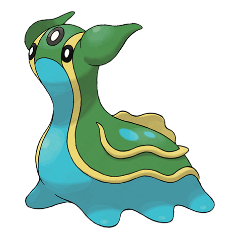
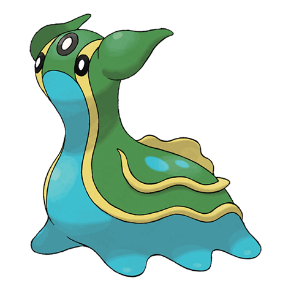

Introdução: Gastrodon é um Pokémon do tipo Água e Terra introduzido na
quarta geração de jogos da franquia Pokémon. Ele é conhecido por sua
aparência de lesma marinha e suas formas regionais que variam entre as
costas leste e oeste do mundo de Pokémon.
Número na Pokédex: #423
Tipos: Água / Terra
Altura: 0.9 metros
Peso: 29.9 kg
Habilidade: Varia entre "Viscosidade" e "Cura Chuva"
Formas Regionais Gastrodon possui duas formas distintas, uma da costa
leste e outra da costa oeste. Forma da
Costa Leste: Coloração rosa e marrom. Forma da Costa Oeste: Coloração
azul e verde.
Conclusão: Gastrodon é um Pokémon fascinante com diversas formas e
habilidades que o tornam único. Sua capacidade de se adaptar ao ambiente
e suas variações regionais são características que destacam sua
versatilidade em batalhas e na exploração do mundo Pokémon.
 
